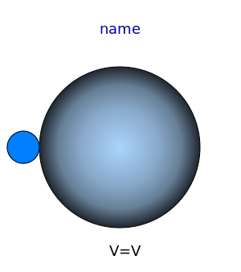
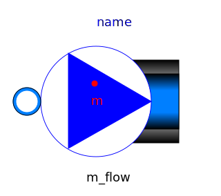
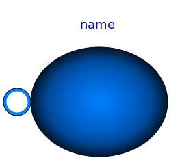
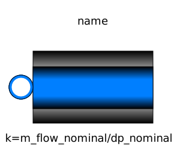

| Name |
Description |
 FluidPort FluidPort |
Interface for quasi one-dimensional fluid flow in a piping
network (incompressible or compressible, one or more phases, one or
more substances) |
 FluidPort_a FluidPort_a |
Fluid connector with filled icon |
 FluidPort_b FluidPort_b |
Fluid connector with outlined icon |
|  PortVolume |
Fixed volume associated with a port by the finite volume
method |
|  FixedMassFlowRate |
Ideal pump that produces a constant mass flow rate from a large
reservoir at fixed temperature and mass fraction |
|  FixedAmbient |
Ambient pressure, temperature and mass fraction source |
|  ShortPipe |
Simple pressure loss in pipe |
| PartialTestModel |
Basic test model to test a medium |
| PartialTestModel2 |
Slightly larger test model to test a medium |